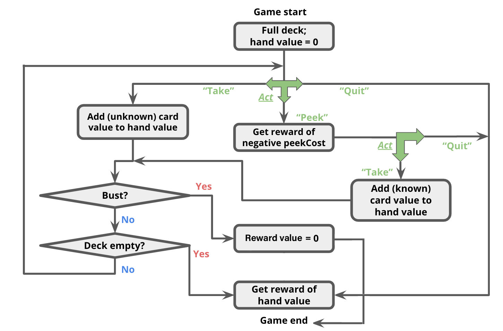

The search algorithms explored in the previous assignment work great when you know exactly the results of your actions. Unfortunately, the real world is not so predictable. One of the key aspects of an effective AI is the ability to reason in the face of uncertainty.
Markov decision processes (MDPs) can be used to formalize uncertain situations. In this homework, you will implement algorithms to find the optimal policy in these situations. You will then formalize a modified version of Blackjack as an MDP, and apply your algorithm to find the optimal policy. Finally, you will explore using MDPs for modeling a real-world scenario, specifically rising sea levels.
In this problem, you will perform the value iteration updates manually on a very basic game just to solidify your intuitions about solving MDPs. The set of possible states in this game is $\mathcal{S} = \{-2, -1, 0, +1, +2\}$ and the set of possible actions is $\mathcal{A} = \{a_1, a_2\}$. The initial state is $0$ and there are two terminal states, $-2$ and $+2$. Recall that the transition function $\mathcal{T}: \mathcal{S} \times \mathcal{A} \rightarrow \Delta(\mathcal{S})$ encodes the probability of transitioning to a next state $s'$ after being in state $s$ and taking action $a$ as $\mathcal{T}(s'|s,a)$. In this MDP, the transition dynamics are given as follows:
$\forall i \in \{-1, 0, 1\} \subset \mathcal{S}$,
Equipped with an understanding of a basic algorithm for computing optimal value functions in MDPs, let's gain intuition about the dynamics of MDPs which either carry some special structure, or are defined with respect to a different MDP.
Let us define a new MDP with states $\text{States}' = \text{States} \cup \{ o \}$, where $o$ is a new state. Let's use the same actions ($\text{Actions}'(s) = \text{Actions}(s)$), but we need to keep the discount $\gamma' = 1$. Your job is to define new transition probabilities $\mathcal{T}'(s' | s, a)$ and rewards $\text{Reward}'(s, a, s')$ in terms of the old MDP such that the optimal values $V_\text{opt}(s)$ for all $s \in \text{States}$ are equal under the original MDP and the new MDP.
Hint: If you're not sure how to approach this problem, go back to Dorsa's notes from the first MDP lecture and read closely the slides on convergence, toward the end of the deck.
Now that we have gotten a bit of practice with general-purpose MDP algorithms, let's use them to play (a modified version of) Blackjack.
For this problem, you will be creating an MDP to describe states, actions, and rewards in this game. More specifically, after reading through the description of the
state representation and actions of our Blackjack game below, you will implement the transition and reward function of the Blackjack MDP inside succAndProbReward().
For our version of Blackjack, the deck can contain an arbitrary collection of cards with different face values. At the start of the game, the deck contains the same number of each cards of each face value; we call this number the 'multiplicity'. For example, a standard deck of 52 cards would have face values $[1, 2, \ldots, 13]$ and multiplicity 4. You could also have a deck with face values $[1,5,20]$; if we used multiplicity 10 in this case, there would be 30 cards in total (10 each of 1s, 5s, and 20s). The deck is shuffled, meaning that each permutation of the cards is equally likely.

The game occurs in a sequence of rounds. In each round, the player has three actions available to her:
In this problem, your state $s$ will be represented as a 3-element tuple:
(totalCardValueInHand, nextCardIndexIfPeeked, deckCardCounts)
As an example, assume the deck has card values $[1, 2, 3]$ with multiplicity 2,
and the threshold is 4.
Initially, the player has no cards, so her total is 0;
this corresponds to state (0, None, (2, 2, 2)).
Three successor states have equal probabilities because each face value had the same amount of cards in the deck. In other words, a random card that is available in the deck is drawn and its corresponding count in the deck is then decremented. Remember that(1, None, (1, 2, 2))
(2, None, (2, 1, 2))
(3, None, (2, 2, 1))
succAndProbReward() will expect you return all three of the successor states shown above. Note that $\mathcal{R}(s, a_\text{take}, s') = 0, \forall s,s' \in \mathcal{S}$. Even though the agent now has a card in her hand for which she may receive a reward at the end of the game, the reward is not actually granted until the game ends (see termination conditions below).
Note that it is not possible to peek twice in a row; if the player peeks twice in a row, then(0, 0, (2, 2, 2))
(0, 1, (2, 2, 2))
(0, 2, (2, 2, 2))
succAndProbReward() should return []. Additionally, $\mathcal{R}(s, a_\text{peek}, s') = -\text{peekCost}, \forall s,s' \in \mathcal{S}$. That is, the agent will receive an immediate reward of -peekCost for reaching any of these states. (0, 0, (2, 2, 2)), taking a card will lead to the state (1, None, (1, 2, 2)) deterministically (that is, with probability 1.0).len(deckCardCounts)-1, inclusive.
(0, None, None).
(Remember that setting the deck to None signifies the end of the game.)
The game continues until one of the following termination conditions becomes true:
(3, None, (1, 1, 0)), and the threshold remains 4.
(3, None, None).(3 + 1, None, (0, 1, 0)) or (3 + 2, None, None). Each has a probability of $1/2$ since 2 cards remain in the deck.
Note that in the second successor state, the deck is set to None to signify the game ended with a bust.
You should also set the deck to None if the deck runs out of cards.succAndProbReward() function of class BlackjackMDP.
Note: if you are experiencing TimeOut, it's very likely due to incorrect implementations instead of optimization related issues. Also be careful with numbers in if conditions. 0 is equivalent to False in Python and can potentially cause if statements to not execute as expected.
So far, we've seen how MDP algorithms can take an MDP which describes the full dynamics of the game and return an optimal policy. But suppose you go into a casino, and no one tells you the rewards or the transitions. We will see how reinforcement learning can allow you to play the game and learn its rules & strategy at the same time!
QLearningAlgorithm,
which is an instance of an RLAlgorithm. As discussed in class,
reinforcement learning algorithms are capable of executing a policy while
simultaneously improving that policy. Look in simulate(), in
util.py to see how the RLAlgorithm will be used. In
short, your QLearningAlgorithm will be run in a simulation of the MDP, and will
alternately be asked for an action to perform in a given state (QLearningAlgorithm.getAction), and then be
informed of the result of that action (QLearningAlgorithm.incorporateFeedback),
so that it may learn better actions to perform in the future.
We are using Q-learning with function approximation,
which means $\hat{Q}^\star(s, a) = \mathbb w \cdot \phi(s, a)$,
where in code, $\mathbb w$ is self.weights, $\phi$ is the featureExtractor function,
and $\hat{Q}^\star$ is self.getQ.
We have implemented QLearningAlgorithm.getAction as a simple $\epsilon$-greedy policy.
Your job is to implement QLearningAlgorithm.incorporateFeedback(),
which should take an $(s, a, r, s')$ tuple and update self.weights
according to the standard Q-learning update.
identityFeatureExtractor() on 1) a small MDP and 2) a large MDP, each with 30000 trials. For the small MDP, how does the Q-learning policy compare with a policy learned by value iteration (i.e., for how many states do they produce a different action)? We have provided a function in the grader 4b-helper which does this for you.
blackjackFeatureExtractor as described in the code comments.
Using this feature extractor, you should be able to get pretty close to the
optimum values on the largeMDP. Note that the policies are not necessarily the same.
4d-helper which does the following:
(1) First, the function runs value iteration on the originalMDP to compute an optimal policy for that MDP. Then, the optimal policy for originalMDP is fixed and simulated on newThresholdMDP.
(2) Then, the function simulates Q-learning directly on newThresholdMDP with blackjackFeatureExtractor and the default exploration probability.
What is the expected (average) rewards from the simulation in (1)? What is the expected (average) rewards under the new Q-learning policy in (2)? Provide some explanation for how the rewards compare, and why they are different.
modifiedMDP and which policy is better. 2-3 sentences explaining why you think the one policy is better than the other.
Sometimes the skills we learn by playing games can serve us well in real life. In this assignment,
you’ve created a MDP that can learn an effective policy for Blackjack.
Now let’s see how an MDP can help us make decisions in a scenario with much higher stakes:
climate change mitigation strategy [1].
Climate change can cause sea level rise, higher tides, more frequent storms, and other events that can damage a coastal city.
Cities want to build infrastructure to protect their citizens, such as seawalls or landscaping that can capture storm surge, but have limited budgets.
For this problem, we have implemented an MDP SeaLevelRiseMDP in submission.py that models how a coastal
city government adapts to rising sea levels over the course of multiple decades. There are 2 actions available to the
government at each timestep:
disaster. When True, at each time step there is a small possibility that the city is immediately flooded by a natural disaster, which is higher when the sea level is close to the infrastructure level and lower when the sea level is much lower than the infrastructure level. If the city manages to avoid being flooded by the sea until the final year of simulation, then the current budget is given as reward and the simulation is ended. However, if the sea level has overtaken the city's infrastructure in this final year, the city does not receive the reward and receives the same negative reward as before.
SeaLevelRiseMDP: one where the simulation is run for 40 years and one where the simulation is run for 100 years. We have already implemented functions with the proper parameters to do this with you; all you need to do is run grader test 5a-helper to examine the optimal policy for these two MDPs. Note that the only parameter difference between the two MDPs is the number of years to run the simulation for. Looking at only a 40 year time horizon, interpret the MDP's optimal sequence of actions into the most economical plan for the city government to take. What about for a 100 year time horizon? Using your understanding of the MDPs, why do you think the two MDPs recommended these different economic policies?
In addition to the economic reasons for choosing one economic plan over another that you just explored, there are ethical considerations as well. Consider the following arguments:
Not all cities have as consistent weather as L.A.
Imagine instead that you're on the city council for Tampa, Florida -
a city almost as well known for its hurricanes as it is its beaches.
The Tampa city council is making a centennial plan for the city.
Recent climate models indicate that the sea level may rise as much as 200 cm over the next century, with much uncertainty. A friend of yours on L.A city council has recommended using the same MDP from above to help plan your actions.
To adapt the MDP for Tampa,
we need to model an increase in devastating weather events like hurricanes in addition to the steady rise of sea level. You will compare 2 similar setups of the SeaLevelRiseMDP where there is a small chance of major disaster every 10 years.
The key difference between these two MDPs is that one discounts future rewards [6],
while the other considers rewards from all states equally. We have already implemented functions with the proper parameters to do this with you;
all you need to do is run grader test 5c-helper to examine the optimal policy for these two MDPs.
Note that the only parameter difference between the two MDPs is the discount factor.
How much infrastructure should you be considering adding in your centennial plan according to the discounted model?
What about for the non-discounted model? Using your understanding of the MDP, why do you think the two MDPs recommended these actions?
5d-helper to output the expected reward of the optimal policy from ValueIteration running the SeaLevelRiseMDP for 100 years with a flooding cost of -$10 million.
5d-helper, you'll find the expected reward of the above fixed optimal policy re-run on an MDP with the more realistic flooding cost.
5d-helper or other outside sources. If you think city council should not use the model, suggest an alternate way city council can still safely incorporate the predictions from SeaLevelRiseMDP into their economic decisions.
[2] IPCC. IPCC AR6 Sea Level Projection Tool. IPCC 6th Assessment Report. 2021.
[4] Moellendorf et al. Justice and the Assignment of the Intergenerational Costs of Climate Change.
[5] Buchak et al. Weighing the Risks of Climate Change .
[6] Discount Rates: a boring thing you should know about.
[7] Trump Put a Low Cost on Carbon Emissions. Here’s Why It Matters.